Shawn Lee
Hi there! I am a software engineer at Visa and currently pursuing a Master's Degree in Computer Science through the OMSCS program at the Georgia Institute of Technology, specializing in Artificial Intelligence and Machine Learning. I hold a Bachelor's Degree in Computer Science from the National University of Singapore. In my current role, I develop high-performance, low-latency and scalable software solutions, with a long-term aspiration of advancing into management.
Education
 Georgia Institute of Technology
Georgia Institute of Technology
 National University of Singapore
National University of Singapore
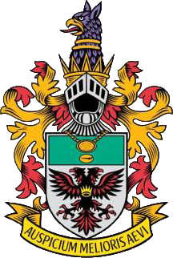 Raffles Institution
Subjects taken: General Paper, Biology, Chemistry, Mathematics, Economics, Mother Tongue (Mandarin), Project Work
Skills
Linux • Docker • CI/CD (Jenkins) • Visual Studio • Visual Studio Code • Boost (C++) • Flask • Spring Boot • Postman • MongoDB • IntelliJ • PyCharm • Firebase • Selenium
Git • GitHub • BitBucket • SourceTree
Work Experience
Software Engineer
Developing business critical systems in C++ as part of the Payment Products Development team, supporting Visa's clearing and settlement of transactions for people and businesses globally
Tasks:
- Developed and optimized reentrant C++ components for the fee and interchange calculation module within VisaNet (Visa’s global payments network). Identified and optimized performance hotspots, achieving an average transaction processing time of 500 microseconds in production and 200 microseconds in local testing, far exceeding the initial target of 3 milliseconds
- Developed performant APIs using sockets, Boost and Go that support multithreading/multiple goroutines, improving throughput by 400% from 5000 to 25000 transactions per second
- Developed components in C++ for Edit Package 5, a product that helps Visa's clients (Acquiring and Issuing Banks) to validate their transactions before transmission to VisaNet for processing (>20m USD in annual revenue)
- Developed scripts using Python for data processing and task automation
- Tech stack: C++, Python, Go
Software Engineer Intern
[Final Report] [Presentation Slides]
Visa is an American multinational financial services corporation that was established on 18 September 1958 and is headquartered in Foster City, California, United States. Visa’s vision is: To be the best way to pay and be paid, which is apt considering Visa is the dominant card payment organization in the world, accounting for 50% of all creditard transactions. Since its establishment, Visa has expanded to over 200 countries and territories worldwide, connecting consumers, businesses, banks and governments.
In light of the COVID-19 global pandemic, adapted their summer internship programme to allow interns to fully work remotely.
I was attached to the Network Processing division under the Technology and Operations business function. Specifically, I was part of the Clearing & Settlement team. Clearing refers to the process where the merchant receives a promise that it will be paid, and Visa sends the issuing and acquiring bank reports with total amounts they need to pay/receive at the end of the day. Settlement refers to the process where actual money is moved between issuers and acquirements using Visa’s settlement bank.
During my internship, the team was working on a client project called Visa Automated Test Portal (VATP) that generates millions of dollars in revenue each year for Visa. VATP is a web application service that Visa offers to banks to verify the accuracy and speed of their transactions within Visa’s network.
Tasks:
- Supported the migration of the existing project from Angular 6 to Angular 11
- Upgraded the components used from the Visa Design System (VDS) 2 and 3 to VDS 4.0 which is supported by Angular 11
- Implemented a new feature that allowed the uploading and saving of financial reports in the form of excel files
- Served as team manager for 3 weeks (one-on-one meetings, organized lunch santa and team bonding activities virtually)
- Tech stack: TypeScript, Java, Angular, Spring Boot, MySQL, Postman
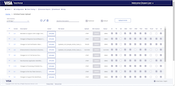 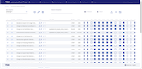
{kind=link}
{kind=link}
 Service Reliability Intern
Service Reliability Intern
[Final Report] [Presentation Slides]
DBS Bank Ltd is a Singapore multinational banking and financial services corporation that was established on 16 July 1968 and is headquartered in Marina Bay, Singapore. Over the years, DBS has continued to innovate and adapt to technological disruption, enabling her to be recognised as the World’s Best Digital Bank. Since its establishment, DBS has expanded into 18 markets across the globe with over 280 branches (DBS, 2018). This includes 6 priority markets in Asia, namely Singapore, Hong Kong, China, India, Indonesia and Taiwan.
I was attached to the Technology Service department under the Technology and Operations business function. My team was responsible for the development and support for CUS related application development work, which is critical especially during the Covid-19 pandemic, as most employees depend on collaborative services to work with one another while working from home.
During my internship, the team was working on a web application to monitor the availability and performance of CUS such as Microsoft OneDrive and SharePoint, as well as mobile services such as BlackBerry Work. The application relies on the use of bots to test variables such as login time, upload/download speed to determine the availability and performance of the services. In addition, the web application allows different departments to keep track of relevant metrics such as the breakdown of the number of company issued mobile devices by country and application utilisation percentage by displaying the data in the form of graphs and charts.
Major Tasks:
- Created RESTful API using Node.js for bots developed by colleagues to upload performance data to the MongoDB database. API also allows data to be downloaded to be displayed using Highcharts on the React front-end
- Created RESTful API using Node.js for upload ad download of metrics data to MongoDB database
- Tested APIs extensively using Postman
- Integrated APIs with React front-end using axios
- Integrated TinyMCE WYSIWYG HTML editor onto React front-end for users to directly alter HTML content on front-end
- Presented completed work to colleague taking over the project, ensuring a proper handover process at the end of my internship
Minor Tasks:
- Ported data from old to new MongoDB database
- Worked together with fellow intern to create API documentation
- Integrated SonarQube (static analysis to detect bugs and vulnerabilities) and NexusIQ (detect security vulnerabilities) into Jenkins pipelines via groovy script
Note: Screenshots are unpopulated with data for data privacy reasons.
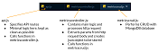 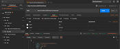 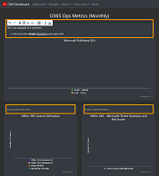 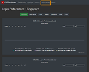 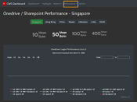 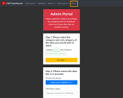 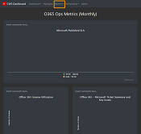
{kind=link}
{kind=link}
{kind=link}
{kind=link}
{kind=link}
{kind=link}
{kind=link}
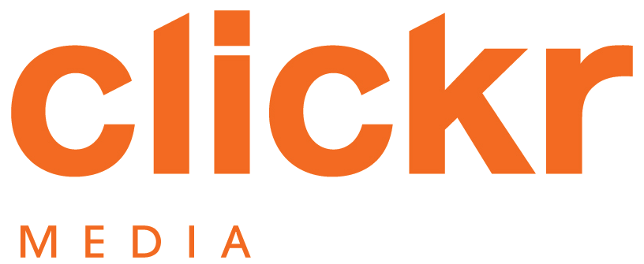 Full-Stack Web Developer Intern
Clickr Media is an Internet marketing consultancy. I interned in the tech department and was primarily involved in web development. On top of implementing client specifications, I was heavily involved in an individual internal project. I started part-time in October and November and transitioned to full-time during the winter break.
My task was to create a project and employee work hours management site to help project managers keep track of deadlines and hours expended for the projects under their charge. Additionally, project managers are also able to retrieve work hours clocked by each employee to ensure that all work is accounted for. They are also able to export project and work hours reports in the form of an excel sheet for easy dissemination. Finally, the site also sends out a task reminder to project managers' emails whenever a project is due in a few days.
My project has significantly improved internal processes of Clickr by automating the tracking process. Previously, many of these processes were handled via Google Sheets and there was a lack of automated reminders and updates. I have also incorporated the jquery plugin, DataTables, for fast retrieval and sorting of information.
Major Tasks:
- Created project and employee work hours management site using HTML, CSS, JavaScript, PHP, SQL & WordPress to improve project billing in the company amounting to thousands of dollars in revenue
- Implemented DBS supplier portal using HTML, CSS & JavaScript based on AdobeXD design provided by DBS, paying close attention to the look and feel of the website
- Created a Developer Guide and briefed person taking over the project, ensuring a proper handover process at the end of my internship
Minor Tasks:
- Website maintenance for clients such as DBS, DHL, Blackmores, K W Ong Breast Clinic and more
- Data migration for DBS media site
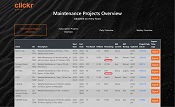 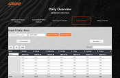 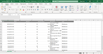 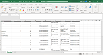 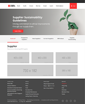 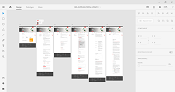
{kind=link}
{kind=link}
{kind=link}
{kind=link}
{kind=link}
{kind=link}
Reservation Officer
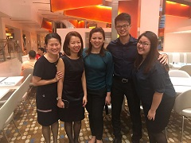
{kind=link}
Officer of Singapore Armed Forces
{kind=link}
{kind=link}
{kind=link}
{kind=link}
{kind=link}
Projects & Hackathons
Random Forest Stock Trading Model
This project investigates the in-sample and out-of-sample trading performance of a manual strategy and a Random Forest classification-based learner, both built using three technical indicators: Bollinger Bands, Relative Strength Index (RSI) & Stochastic Oscillator
In both the manual strategy and Random Forest learner, we used the same starting cash of $100,000. Allowable positions are 1000 shares long, 1000 shares short, or 0 shares. We can trade up to 2000 shares at a time, with unlimited leverage, assum- ing commission of $9.95 and trade impact of 0.005 (0.5%). JPM (JPMorgan Chase & Co.) is the only symbol used. The in-sample time period is from January 1, 2008 to December 31, 2009, and the out-of-sample period is from January 1, 2010 to December 31, 2011.
Subsequently, we also explore the effects of different values of market impact (0.0005, 0.005, 0.05) on cumulative returns and the number of trades of the Random Forest learner during the in-sample time period.
Technologies used: Python, Pandas, Numpy, Scikit-learn, Matplotlib
RevoSniper
[GitHub]
RevoSniper allows users to set their desired class timings, bikes and studios, and will automatically book the class for them when the booking window opens. RevoSniper is developed using Node.js and Puppeteer, a Node library which provides a high-level API to control headless Chrome over the DevTools Protocol.
I created RevoSniper to help my girlfriend to secure her desired spin classes, which are usually during peak hours and hence extremely popular. Bikes which have a good view of the instructor are also often snapped up immediately when booking commences. With RevoSniper, users can focus more on spinning, and less on booking!
Technologies used: Node.js, Puppeteer
StalkFish
[Technical Report] [Demo Slides]
In the age of e-commerce, consumers are in constant search of better prices, offers and discounts. With how easy it is to find a better deal on a certain product, it becomes more important that companies offer competitive prices at the right timing and also the fastest timing possible in order to capture the market.
The client, “Snow Treasures Singapore”, is a SME 500 family based business that sells frozen seafood products on various e-commerce platforms such as Shopee, Qoo10 and Lazada. The client is a SME consisting of older staff who are not “tech-savvy”. Currently, in order to track competitor prices the staff would manually visit a URL link of the competitor’s products, and manually update an excel sheet that is shared through OneDrive. Consequently, doing so has proven to be very time consuming for the company.
To solve this issue, we built a platform (StalkFish) to automatically monitor prices on selected e-commerce products across several client-specified competitors via web scraping and Telegram Bot notifications. On StalkFish, users are able to visualize the price fluctuations of client-specified products, with advanced features of suggesting pricing via machine learning based on criteria provided by the user.
Technologies used: React, AWS, Nginx, Kubernetes, MongoDB, PostgreSQL, Hasura GraphQL, Python, Telegram Bot API
Amazon Clone
[Project Page] [GitHub]
Amazon Clone is a web application developed using React, with a Google Firebase back-end. This project was developed throughout the winter break in my third year of studies as a computer science undergraduate.
The purpose of this project is to explore full-stack web development, which we are not exposed to during the course of our studies. Visit the project page for an overview of the features implemented in Amazon Clone!
Technologies used: React, Firebase (authentication, functions and cloud firestore)
 Static Program Analyzer (SPA)
Static Program Analyzer (SPA)
[Presentation Slides] [Project Report]
To answer program queries, the SPA must first analyze a source program and extract relevant program design entities, abstractions, Abstract Syntax Tree (AST), program Control Flow Graph (CFG) that are stored in a Program Knowledge Base (PKB). Secondly, the SPA must provide the user with means to ask questions about programs. These questions are written in a formal Program Query Language (PQL). SPA processes the PQL queries based on the information found in the PKB and returns the results to the user. The SPA was developed alongside 5 other computer science students from the National University of Singapore as part of a requirement for our software engineering module, CS3203.
Major Contributions:
- Implemented the following subcomponents of the Query Processor:
- QueryValidator - validates the semantic validity of the QueryParseResult (from parsing a query string) before the QueryBuilder uses the QueryParseResult to build a Query
- Query - internal representation of a user query that is easy to use for evaluation
- QueryBuilder - builds a Query using the QueryParseResult
- Served as the team’s Test IC, performing extensive unit, integration and system testing
Technologies used: C++
JP Morgan 2020 Code for Good Hackathon
[Project Page] [Product Demo Slides] [Product Demo Video] [GitHub]
I participated in the 2020 APAC Code for Good virtual hackathon organised by J.P. Morgan, where teams were challenged to develop innovative technology solutions in 24 hours for nonprofit organisations under the guidance of JP Morgan's very own technological experts.
My team took on the challenge statement proposed by New Hope Community Services, which is an organisation that assists displaced individuals in their application for subsidized housing from HDB.
Our solution was to develop a progressive web app which provides a centralised and collaborative platform for easy updating of records and convenient tracking of client progress. To increase the matching accuracy between clients and potential flatmates, we employed machine learning techniques (K Nearest Neighbours algorithm) to compare the similarity across the different preferences and return the top 3 recommendations.
We emerged among the top 4 teams in our category. It was a really enjoyable experience collaborating closely with people I had just met for the first time.
Technologies used: Gatsby (React), Firebase, Figma
Credit Suisse 2020 CodeIT Online Coding Challenge
[GitHub]
I participated in the 2020 CodeIT Online Coding Challenge organised by Credit Suisse in the team category, where teams were challenged to solve as many coding problems of medium to hard level difficulty within a 24 hour period. My team placed 17th overall out of over 50 teams.
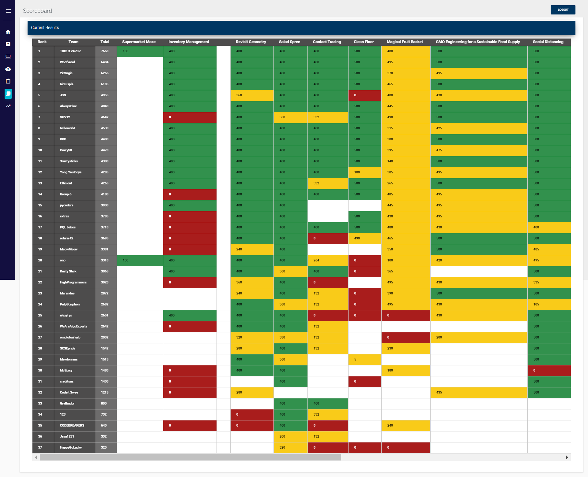Technologies used: Javascript, Node.js, Heroku
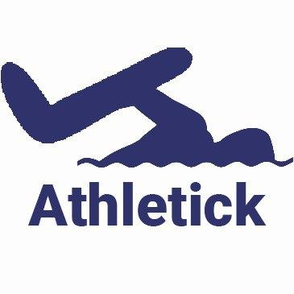 Athletick
[Personal Project Portfolio] [User Guide] [Developer Guide] [Product Pitch & Demo Slides] [GitHub]
Athletick is a team management desktop application for coaches and team captains of timing-based performance sports. Athletick provides them with athlete information managing, attendance tracking and performance monitoring. This enables them to better manage their team, plan for trainings and prepare for upcoming competitions. Athletick was developed alongside 4 other computer science students from the National University of Singapore as part of a requirement for our second-year software engineering module, CS2103T.
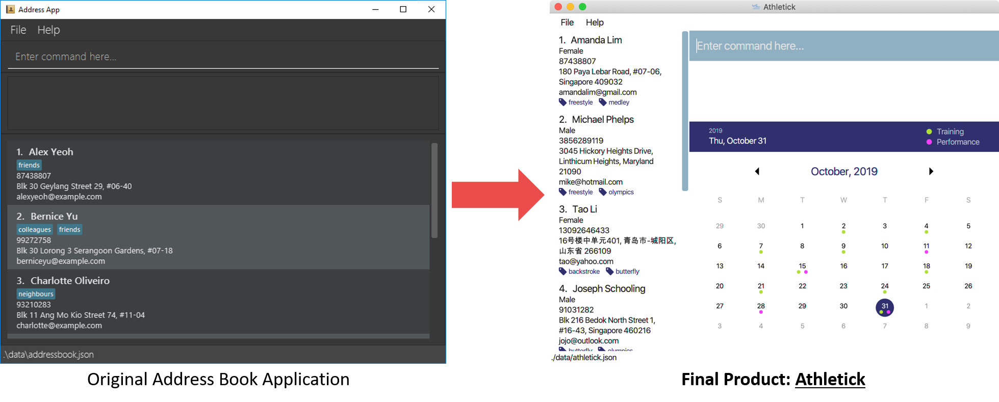Major Contributions:
- Contributed calendar feature to the app which provides 2 main functions:
- Displays an overview of training and performance records in a selected month
- Displays training and performance records entered on a specific date
- Served as the team’s Integration Engineer, ensuring all features are integrated together smoothly for each project milestone submission
- Designed the final product using AdobeXD and implemented it using SceneBuilder
Main Takeaways:
- Software engineering in a team where we conceptualise and implement enhancements to a given product as well as to prepare it to be continued by future developers
- Preparing various types of professional technical documentation suitable for different audiences (e.g. User Guide, Developer Guide)
- Team meeting skills & oral presentation skills (e.g. Pitch, Product Demo)
Technologies used: Java, JavaFX, TestFX, FXML, Gradle, Travis (CI/CD), SceneBuilder, AdobeXD
PayWhere 
PayWhere is an Android application that helps mobile payment users to find suitable dining outlets in shopping centres by displaying those that accept their preferred mobile payment platforms.
PayWhere contains all the information you need to dine and make payment easily, so you don't have to trawl through multiple websites.
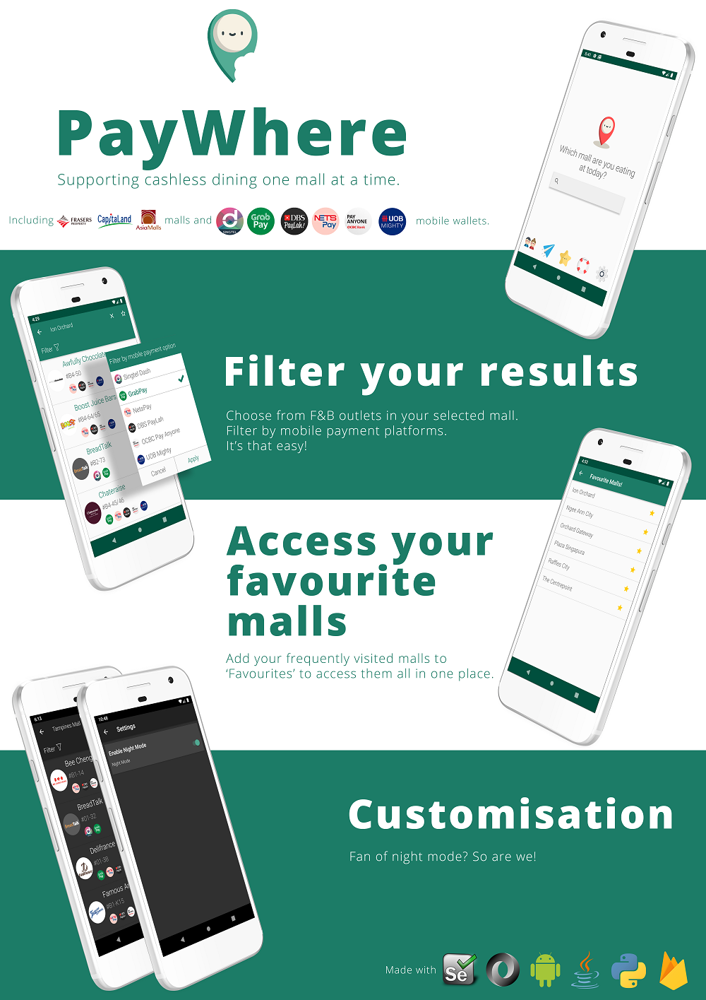{kind=link}
PayWhere was developed over the summer for NUS Project Orbital. My partner, Dominique Ng and I were awarded Apollo 11, which is the highest level of achievement in this module for displaying strong evidence of project management, user testing and source code control.
Technologies used: Java & XML (Android Studio), Python (Web-Scraping using Selenium)
Trackr
Trackr is a desktop application that helps you to manage tasks. Trackr is optimized for users who prefer to work with a Command Line Interface (CLI) while still having the benefits of a Graphical User Interface (GUI).
Technologies used: Java, JavaFX, FXML, Gradle, Travis (CI/CD), SceneBuilder
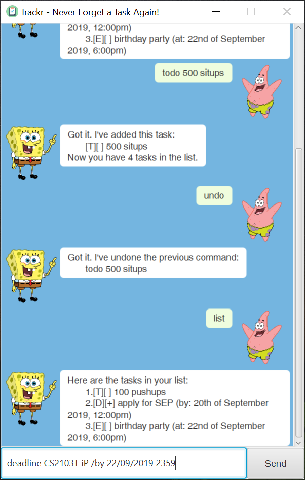Extracurriculars
Vice-Captain
During my first year as a freshman in NUS, I won first place in the NYSI and SUNIG competitions, and first runner-up in NUS Open. I also had the opportunity to represent NUS overseas in the Panasonic 20th Asia Pacific Water Polo Tournament held in Hong Kong, where we faced national and state teams from Australia, Philippines and China.
My commitment to the team, coupled with my playing ability, resulted in my appointment as vice-captain in my sophomore year. As vice-captain, I am responsible for the management of team morale and ensuring a high quality of training. Moreover, I am involved in the organising of competitions and hosting of foreign teams. Recently, we hosted The Hong Kong Polytechnic University (PolyU), and I liased with the NTU team to organise a tournament, providing a good training experience for the PolyU team.
During my term as vice-captain, I have been successful in leading the team to a first place finish in the NYSI and SUNIG competitions. My captain and I aimed to have a clean sweep of first positions in every tournament the team plays in during our term as leaders.
 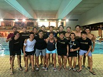
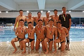
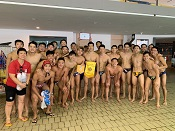
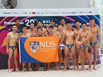
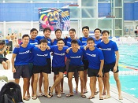
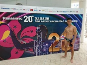
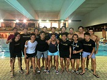
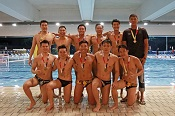
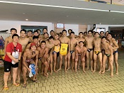
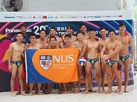
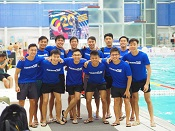
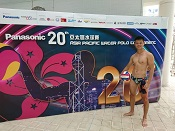
{kind=link}
{kind=link}
{kind=link}
{kind=link}
{kind=link}
{kind=link}
{kind=link}
Awards
- 1st Place - National University of Singapore - 2019 SUNIG Water Polo
- 1st Place - National University of Singapore - 2019 NYSI IHL Water Polo
- 1st Place - National University of Singapore - 2019 NYSI IHL Water Polo
- 1st Place - National University of Singapore - 2018 SUNIG Water Polo
- 2nd Place - National University of Singapore - 2018 NUS Open Water Polo
- 1st Place - National University of Singapore - 2018 NYSI IHL Water Polo
- 1st Place - National University of Singapore - 2018 Inter-Hall Games Swimming (Men's)
- Commander Coin - Basic Military Training Centre - 2017
- SkillsFuture SG - WSQ Advanced Certificate in Team Leadership 2016
- 2nd Place - Raffles Institution - A Division Men's Water Polo 2015
- 3rd Place - Raffles Institution - A Division Men's Water Polo 2014